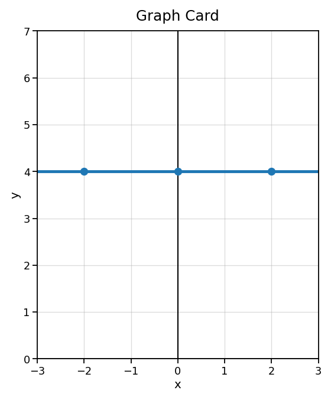
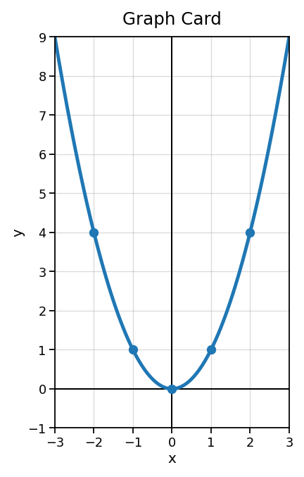
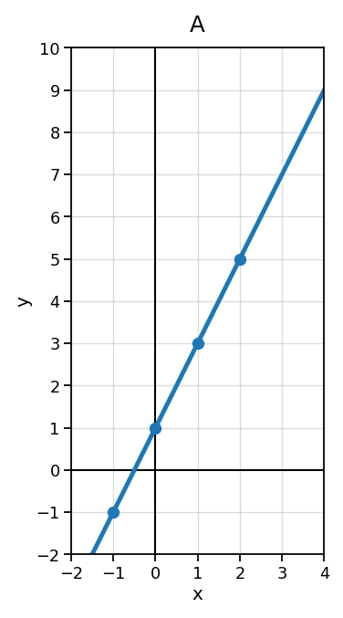
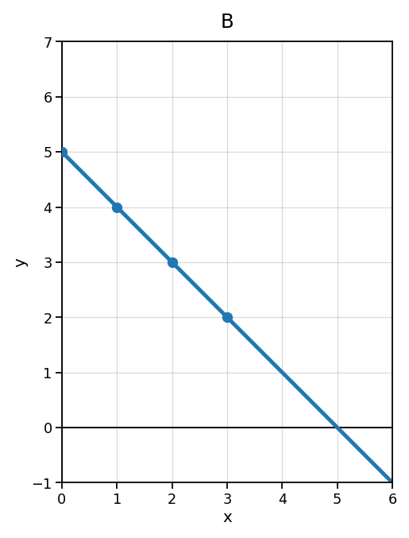
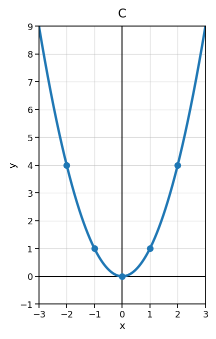
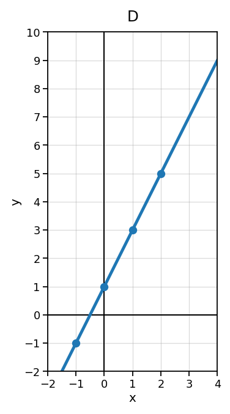

Section 1.3 Investigation
Investigation: Every function belongs somewhere. Can you figure out the families?
Time: 15-20 minutes
Format: Card sort, pattern hunt, Which One Doesn't Belong, and whole-class synthesis
Setup
- Grouping: Partners or groups of 3.
- Materials: Student handout, pencil, and scissors if physically cutting the cards.
- Teacher setup: Decide whether students will cut cards or sort by writing card codes. Project the first two cards and ask what clues students notice.
- Timing: 6 minutes for sorting, 5 minutes for family rules, 5 minutes for WODB challenges, 3-4 minutes for synthesis.
Student Goal
Today you will investigate why some functions belong to the same family. You will not be told the family names at first. Your job is to use evidence from graphs, tables, equations, and contexts.
Norms
- Sort by evidence, not guessing.
- Use at least two clues before deciding.
- Disagree by pointing to a graph, table, equation, or context.
- Revise your sort when new evidence makes your thinking stronger.
Sort the Cards
You have cards from four function families. The family names are hidden for now.
- Sort the cards into four groups that seem to belong together.
- Give each group a temporary family name, such as Family A, B, C, and D.
- Record the strongest evidence that each group belongs together.
Record Your First Sort
| Temporary Family Name | Card Codes in This Family | Evidence: What do the cards have in common? |
|---|---|---|
| Family A | ||
| Family B | ||
| Family C | ||
| Family D |




| Input $x$ | Output $y$ |
|---|---|
| -1 | -1 |
| 0 | 1 |
| 1 | 3 |
| 2 | 5 |
| Input $x$ | Output $y$ |
|---|---|
| 0 | 4 |
| 1 | 4 |
| 2 | 4 |
| 3 | 4 |
| Input $x$ | Output $y$ |
|---|---|
| 0 | 1 |
| 1 | 2 |
| 2 | 4 |
| 3 | 8 |
| Input $x$ | Output $y$ |
|---|---|
| -2 | 4 |
| -1 | 1 |
| 0 | 0 |
| 1 | 1 |
| 2 | 4 |
A taxi charges $1$ to unlock the ride and $2$ more for each mile.
A parking garage charges a flat $4$ weekend fee no matter how many hours you stay.
A rumor doubles each hour: 1 person, then 2, then 4, then 8.
The area of a square changes as the side length changes: $A=s^2$.
Look for Family Clues
Now study one family at a time. Do not worry about official names yet. Describe how each family behaves.
| Family | Graph Clue | Table Clue | Equation or Context Clue |
|---|---|---|---|
| A | |||
| B | |||
| C | |||
| D |
Make a Claim
Choose one family. Write a claim that begins: These cards belong together because...
One graph can be argued as the one that does not belong. More than one answer may be reasonable if your evidence is strong.




| Which one? | Evidence from the graph |
|---|---|
Study the output patterns. Which table belongs to a different family from the others?
A
| Input $x$ | Output $y$ |
|---|---|
| 0 | 3 |
| 1 | 5 |
| 2 | 7 |
| 3 | 9 |
B
| Input $x$ | Output $y$ |
|---|---|
| 0 | 1 |
| 1 | 3 |
| 2 | 5 |
| 3 | 7 |
C
| Input $x$ | Output $y$ |
|---|---|
| 0 | 2 |
| 1 | 4 |
| 2 | 8 |
| 3 | 16 |
D
| Input $x$ | Output $y$ |
|---|---|
| 0 | -1 |
| 1 | 1 |
| 2 | 3 |
| 3 | 5 |
| Which one? | Evidence from the table |
|---|---|
Study the structures of the equations. Which one does not belong with the others?
A
$y=3x+2$
B
$y=x^2$
C
$y=-2x+5$
D
$y=\frac{1}{2}x-4$
| Which one? | Evidence from the equation |
|---|---|
Teacher Reveal
Your teacher will now reveal the family names. Match the names to your sorted groups.
ConstantLinearExponentialQuadratic
| Your Family | Official Name | Best Clue for Recognizing This Family |
|---|---|---|
Build the Big Idea
A function family is...
The easiest family for me to recognize is __________ because __________.
The hardest family for me to recognize is __________ because __________.
- What clues helped you identify a linear function?
- How can a table show exponential behavior differently from linear behavior?
- Why are quadratic and exponential functions easy to confuse at first?
- Which representation gave your group the strongest evidence: graph, table, equation, or context?
- How is classifying a function family different from building a full model for a situation?
Purpose
This investigation helps students discover that functions can be grouped into families because they share recognizable patterns across graphs, tables, equations, and contexts. The goal is classification using evidence, not full modeling or formal transformation work.
Launch: 2-3 minutes
Say: “At a family reunion, people may look different, but they share clues that show they belong together. Functions are similar. Today you will sort function cards into families before I tell you the family names.”
Display: Show Graph Card 01 and Graph Card 13. Ask: “What is one way these are alike? What is one way they are different?”
Teacher Moves During Sorting
- Ask, “What evidence made you put those together?”
- Push students beyond “they both go up” by asking about shape, repeated differences, repeated multiplication, and equation structure.
- Allow imperfect first sorts. The WODB rounds are designed to create revision.
- Do not reveal the official names until Part 4.
Expected Student Observations
- Constant: Outputs stay the same; graph is horizontal; equation has no changing input term.
- Linear: Outputs change by equal differences; graph is a straight line; equation has $x$ to the first power.
- Exponential: Outputs multiply by the same factor; graph curves and changes faster; equation has the variable in the exponent.
- Quadratic: Graph is U-shaped; equation has $x^2$; table has symmetric values or changing first differences.
Common Misconceptions
- Students may think every increasing graph is linear.
- Students may call any curve exponential.
- Students may confuse quadratic and exponential because both curve upward.
- Students may rely on one value in a table instead of the pattern across values.
- Students may think classification means they must write a perfect equation for the situation.
Closure / Synthesis
Final summary: Function families are groups of functions with shared behavior. We can classify a family using graph shape, table patterns, equation structure, and context clues.
Exit prompt: “Name one family and give two clues that would help someone recognize it.”
Original task: Sort the function cards into families and record evidence for each group.
| Family | Cards | Explanation |
|---|---|---|
| Linear | 01, 02, 03, 04 | Straight graph, constant difference of 2, equation $y=2x+1$, context has a fixed start plus equal increase per mile. |
| Constant | 05, 06, 07, 08 | Output remains 4; graph is horizontal; equation is $y=4$; context describes a flat fee. |
| Exponential | 09, 10, 11, 12 | Outputs multiply by 2; equation has variable in the exponent; graph curves upward; context describes doubling. |
| Quadratic | 13, 14, 15, 16 | Equation has $x^2$; graph is U-shaped; table is symmetric; square-area context matches squaring. |
Original task: Describe clues from graphs, tables, equations, and contexts.
- Constant: same output every time; horizontal graph.
- Linear: equal additive change; straight graph.
- Exponential: equal multiplicative change; variable in exponent.
- Quadratic: $x^2$ structure; U-shaped graph; changing first differences.
Original task: Which graph does not belong? Justify with evidence.
Likely answer: C does not belong because it is quadratic and curved, while A, B, and D are linear graphs. Accept other responses if mathematically justified, such as B because it decreases while A and D increase and C opens upward.
Original task: Which table belongs to a different family?
Answer: C. Tables A, B, and D have constant differences of 2, so they are linear. Table C multiplies by 2 each step, so it is exponential.
Original task: Which equation does not belong?
Answer: B. Equations A, C, and D are linear because the variable is to the first power. Equation B is quadratic because it contains $x^2$.
Original task: Match official names to sorted families and write the best clue.
- Constant: same output, horizontal graph.
- Linear: straight line and constant difference.
- Exponential: constant ratio or repeated multiplication.
- Quadratic: U-shaped graph and $x^2$ structure.
- Linear functions have straight graphs and constant differences.
- Exponential tables multiply by a constant factor; linear tables add or subtract a constant amount.
- Both can curve upward in early examples, but quadratic has $x^2$ behavior while exponential has repeated multiplication.
- Answers vary; require evidence.
- Classification identifies the type of behavior; modeling creates a specific rule for a situation.